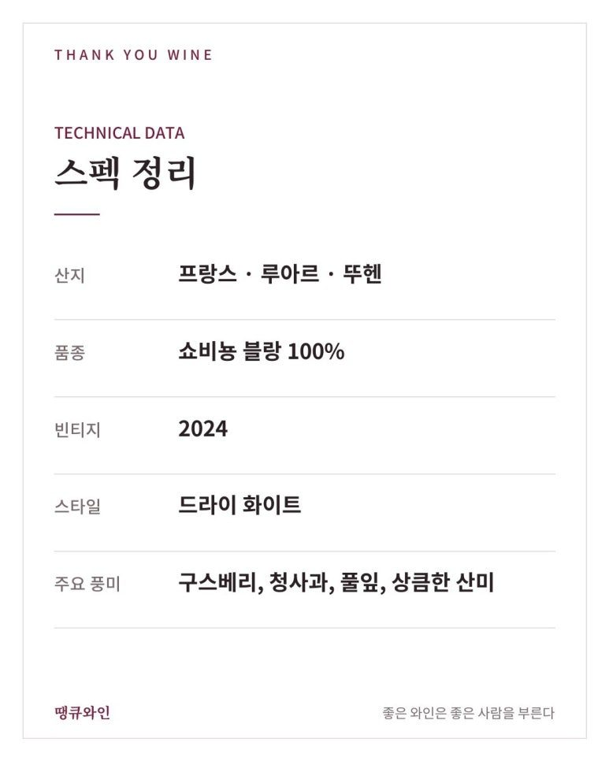
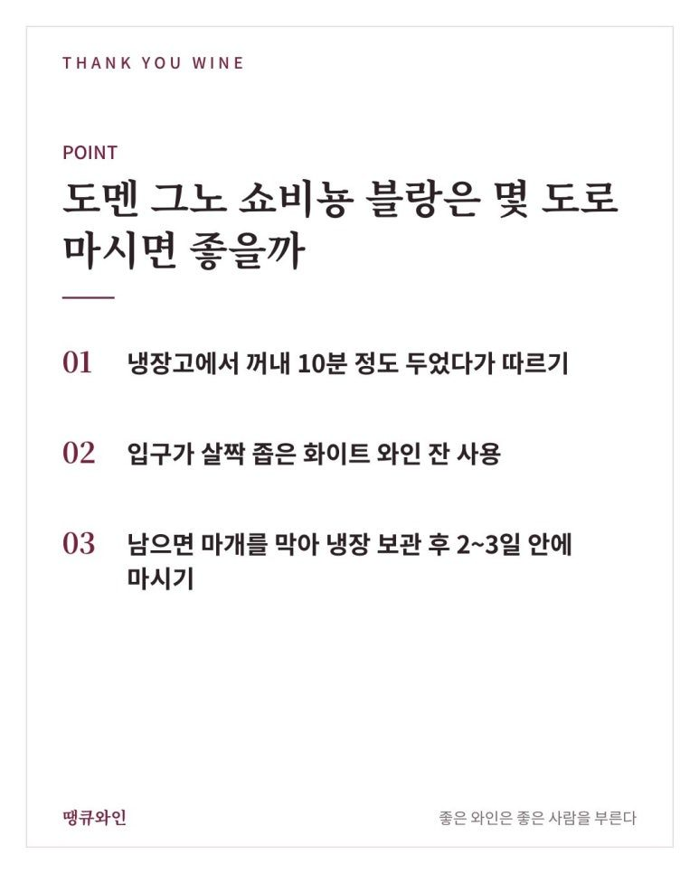
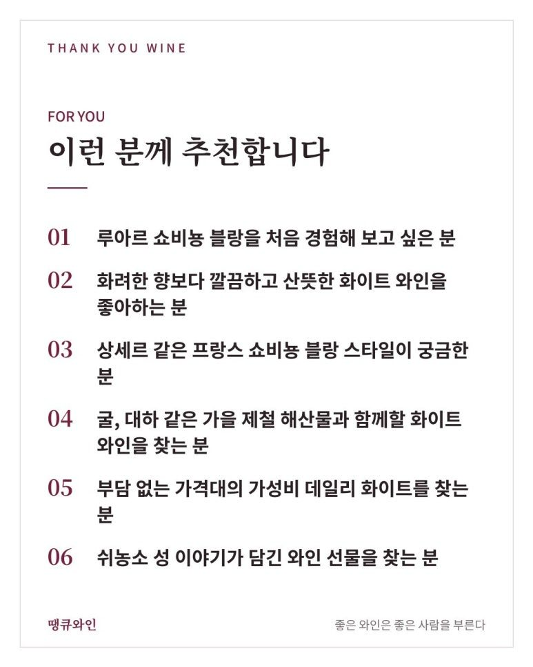
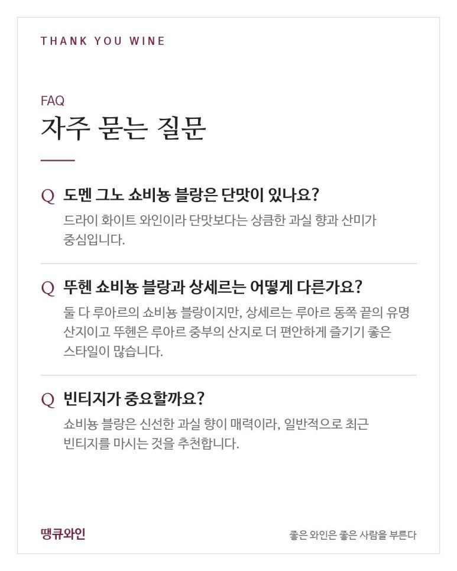

도멘 그노 쇼비뇽 블랑 추천
굴 제철에 꺼내는 루아르 쇼비뇽 블랑, 뉴질랜드와 뭐가 다를까?
도멘 그노 쇼비뇽 블랑 추천은 쇼비뇽 블랑의 고향 루아르의 산뜻함을 부담 없이 경험할 수 있는 한 병이에요.
쇼비뇽 블랑을 좋아하다 보면 한 번쯤 이런 궁금증이 생깁니다.
뉴질랜드 쇼비뇽 블랑과 프랑스 쇼비뇽 블랑은 무엇이 다를까?
같은 품종이라도 어디에서 자랐는지에 따라 향과 맛은 꽤 달라집니다.
그리고 프랑스 쇼비뇽 블랑의 고향은 바로 루아르 밸리입니다.
오늘 소개할 도멘 그노 뚜헨 쇼비뇽 블랑 아오뻬는 루아르 쇼비뇽 블랑의 산뜻한 매력을 편하게 경험해 볼 수 있는 한 병입니다.
상세르처럼 이름난 산지의 와인이 조금 부담스러웠던 분들께 특히 반가운 와인이죠.
마침 땡큐와인에도 2024 빈티지가 새로 들어와, 이번 기회에 함께 정리했습니다.
무엇보다 중요한 포인트는 바로,
쇼비뇽 블랑의 고향 루아르의 산뜻함을 부담 없이 경험할 수 있는 한 병이라는 것.

한눈에 보는 도멘 그노 쇼비뇽 블랑
- 생산자
- 도멘 그노(Domaine Guenault), 루아르 뚜헨의 가족 경영 와이너리
- 산지
- 프랑스 루아르 밸리 뚜헨(Touraine) AOP
- 품종
- 쇼비뇽 블랑 100%
- 스타일
- 드라이 화이트 와인, 싱그러운 과실 향과 산뜻한 산미
- 이런 분께
- 루아르 쇼비뇽 블랑을 부담 없이 시작해 보고 싶은 분
뚜헨은 어떤 산지일까? 쉬농소 성 옆 포도밭 이야기
뚜헨(Touraine, 투렌이라고도 표기)은 루아르 밸리 한가운데에 있는 와인 산지입니다.
루아르 밸리는 아름다운 고성(古城)이 많아 '프랑스의 정원'이라고 불리고, 유네스코 세계유산으로도 지정되어 있습니다.
뚜헨은 루아르에서 쇼비뇽 블랑을 많이 생산하는 대표 산지 가운데 하나입니다.
도멘 그노가 있는 마을 가까이에는 루아르에서 가장 유명한 성 가운데 하나인 쉬농소 성(Château de Chenonceau)이 있습니다.
쉬농소 성은 셰르 강 위를 가로지르듯 지어진 독특한 모습으로 잘 알려져 있습니다.
앙리 2세의 연인 디안 드 푸아티에, 그리고 왕비 카트린 드 메디시스가 차례로 이 성을 가꾸었다는 이야기가 전해지죠.
그래서 쉬농소 성은 '여인들의 성'이라는 별명으로도 불립니다.
이 와인을 선물할 때는
“쉬농소 성 옆, 셰르 강 언덕에서 자란 쇼비뇽 블랑”
이라는 이야기를 함께 건네기 좋습니다.
루아르 쇼비뇽 블랑은 뉴질랜드와 무엇이 다를까?
루아르 쇼비뇽 블랑은 뉴질랜드보다 향이 차분하고 산미와 미네랄이 또렷한 편입니다.
두 산지의 차이를 간단히 정리하면 이렇습니다.
- 뉴질랜드 말보로: 패션프루트·자몽처럼 화려하고 열대 과일 같은 향이 강한 스타일
- 프랑스 루아르: 청사과·구스베리처럼 싱그러운 과실 향과 깔끔한 산미가 중심인 스타일
그래서 루아르 쇼비뇽 블랑은
싱그러운 과실 향 + 풀잎 향 + 깔끔한 산미
이 세 가지가 균형 있게 느껴지는 것이 특징입니다.
향이 너무 화려하지 않아 음식과 함께 마셔도 음식 맛을 가리지 않는다는 것도 장점입니다.
도멘 그노 쇼비뇽 블랑 테이스팅 노트
도멘 그노 쇼비뇽 블랑은 싱그러운 과실 향과 풀잎 향이 어우러진 산뜻한 화이트 와인입니다.
코에서는 구스베리와 청사과 같은 상큼한 과실 향이 먼저 올라옵니다.
구스베리(Gooseberry)는 우리말로 '서양 까치밥나무 열매'로, 새콤하고 풋풋한 맛을 가진 베리입니다.
그 뒤로 막 자란 풀잎처럼 싱그러운 향이 이어집니다.
입안에서는 신선하고 기분 좋은 산미가 중심을 잡아 주고, 마무리는 깔끔하게 떨어집니다.
2024 빈티지는 최근 빈티지라 쇼비뇽 블랑 특유의 생생한 향을 즐기기 좋을 때입니다.
DOMAINE GUENAULT TOURAINE SAUVIGNON BLANC AOP
- 산지: 프랑스 · 루아르 · 뚜헨
- 품종: 쇼비뇽 블랑 100%
- 빈티지: 2024
- 스타일: 드라이 화이트
- 주요 풍미: 구스베리, 청사과, 풀잎, 상큼한 산미

도멘 그노 쇼비뇽 블랑은 몇 도로 마시면 좋을까?
10~12도 정도가 가장 좋습니다.
- 냉장고에서 꺼내 10분 정도 두었다가 따르기
- 입구가 살짝 좁은 화이트 와인 잔 사용
- 남으면 마개를 막아 냉장 보관 후 2~3일 안에 마시기

너무 차가우면 향이 닫히고, 조금 풀리면 과실 향이 훨씬 예쁘게 열립니다.
도멘 그노 쇼비뇽 블랑과 어울리는 음식은?
산미가 깔끔한 루아르 쇼비뇽 블랑은 해산물과 담백한 생선 요리, 가벼운 전채 요리와 특히 잘 어울립니다.
해외 와인숍 자료에서도 섬세한 생선 요리, 전채 요리, 냉육(콜드 컷) 플래터와 함께 아페리티프로 즐기기 좋다고 소개합니다.
땡큐와인에서 추천한다면 지금 같은 10월에는 이런 메뉴와 함께 즐겨보겠습니다.
- 가을 해산물: 굴 무침, 생굴, 대하 소금구이, 꽃게찜
- 회와 생선: 광어회, 도미구이, 가을 갈치구이
- 전채 요리: 염소 치즈 샐러드, 하몽·살라미 플래터
- 한식: 해물파전, 굴전, 도토리묵 무침
특히 생굴과의 조합을 추천드립니다.
루아르 쇼비뇽 블랑과 굴은 프랑스에서도 손꼽히는 페어링으로, 와인의 산미가 굴의 바다 향을 깔끔하게 정리해 주거든요.
찬바람이 불기 시작하는 지금, 굴 제철이 시작될 때 함께 즐기기 딱 좋은 와인입니다.
도멘 그노 쇼비뇽 블랑, 이런 분께 추천합니다
- 루아르 쇼비뇽 블랑을 처음 경험해 보고 싶은 분
- 화려한 향보다 깔끔하고 산뜻한 화이트 와인을 좋아하는 분
- 상세르 같은 프랑스 쇼비뇽 블랑 스타일이 궁금한 분
- 굴, 대하 같은 가을 제철 해산물과 함께할 화이트 와인을 찾는 분
- 부담 없는 가격대의 가성비 데일리 화이트를 찾는 분
- 쉬농소 성 이야기가 담긴 와인 선물을 찾는 분

특히 “뉴질랜드 쇼비뇽 블랑은 향이 너무 강하다”고 느꼈던 분들께 권해 드리기 좋은 와인입니다.
선물용으로도 활용도가 높습니다.
프랑스 루아르 와인이라는 점과 쉬농소 성 이야기가 함께 있어, 집들이나 모임 자리에 한 병 들고 가기에도 좋습니다.

자주 묻는 질문
도멘 그노 쇼비뇽 블랑은 단맛이 있나요?
드라이 화이트 와인이라 단맛보다는 상큼한 과실 향과 산미가 중심입니다.
뚜헨 쇼비뇽 블랑과 상세르는 어떻게 다른가요?
둘 다 루아르의 쇼비뇽 블랑이지만, 상세르는 루아르 동쪽 끝의 유명 산지이고 뚜헨은 루아르 중부의 산지로 더 편안하게 즐기기 좋은 스타일이 많습니다.
빈티지가 중요할까요?
쇼비뇽 블랑은 신선한 과실 향이 매력이라, 일반적으로 최근 빈티지를 마시는 것을 추천합니다.
결국 도멘 그노 쇼비뇽 블랑의 매력은 ‘루아르의 산뜻함’입니다
도멘 그노 뚜헨 쇼비뇽 블랑 아오뻬는 쇼비뇽 블랑의 고향 루아르의 산뜻한 스타일을 편하게 보여 주는 와인입니다.
그래서 저는 이 와인을
“프랑스 쇼비뇽 블랑이 궁금할 때 가볍게 열어 보기 좋은 한 병”
이라고 소개하고 싶습니다.
같은 도멘에서 만든 말벡(르 꼬뜨)과 함께 준비하면 화이트와 레드를 한 번에 맞출 수 있어 가을 모임에도 좋습니다.
굴 제철이 시작되는 요즘, 쉬농소 성 옆 셰르 강 언덕에서 온 루아르 쇼비뇽 블랑을 직접 만나보세요.
이 글은 땡큐와인 네이버 블로그에 먼저 올린 글이에요.